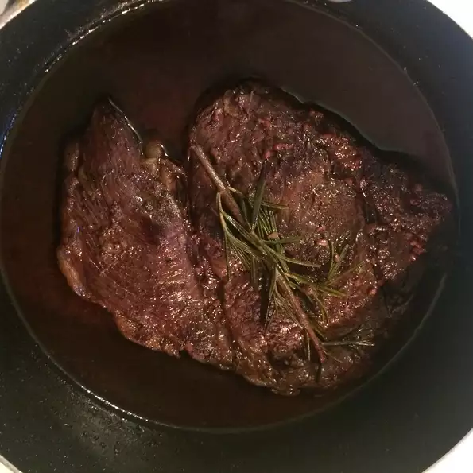

Steak

This is a wonderful steak dish that was prepared for me when I lived in Argentina. This Argentinean
steak dish is quite popular in various restaurants around Buenos Aires.
Ingredients:
- 1 cup red wine
- 1 teaspoon salt
- 1 sprig fresh rosemary
- 4 New York strip steaks, cut 1-inch thick
Steps:
- Combine the red wine, salt and rosemary in a small bowl. Let stand at room temperature for 2 to 3 hours.
- Heat a large griddle or cast-iron skillet over high heat. Place the steaks on the hot pan, and cook for about 8 minutes per side, or to desired degree of doneness. The internal temperature should be at least 145 degrees F (62 degrees C) for medium rare. Pour in the wine mixture, and allow it to boil for a minute. Serve steaks with sauce on a deep platter.
Rosemary Steak